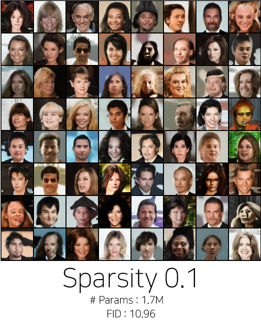
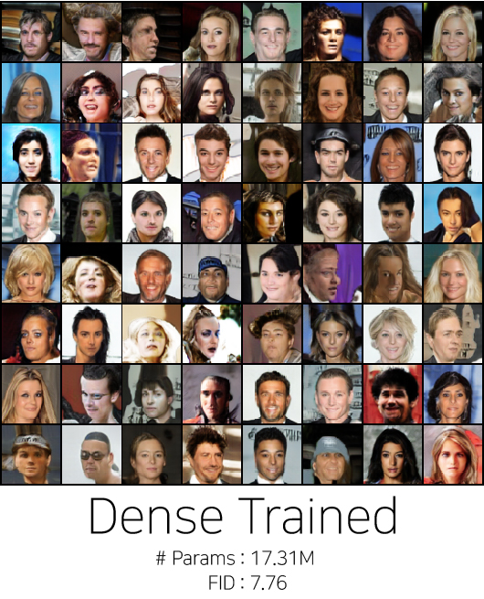
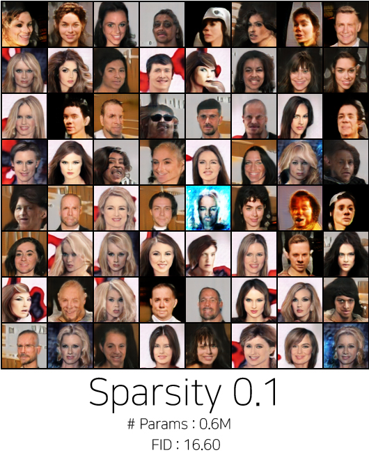
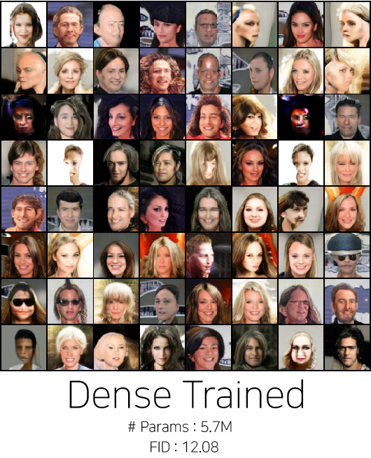
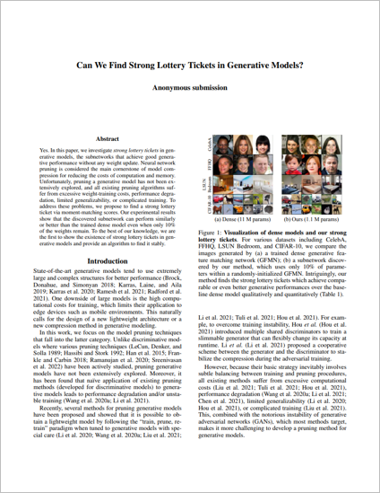

| Yes. In this paper, we investigate strong lottery tickets in generative models, the subnetworks that achieve good generative performance without any weight update. Neural network pruning is considered the main cornerstone of model compression for reducing the costs of computation and memory. Unfortunately, pruning a generative model has not been extensively explored, and all existing pruning algorithms suffer from excessive weight-training costs, performance degradation, limited generalizability, or complicated training. To address these problems, we propose to find a strong lottery ticket via moment-matching scores. Our experimental results show that the discovered subnetwork can perform similarly or better than the trained dense model even when only 10% of the weights remain. To the best of our knowledge, we are the first to show the existence of strong lottery tickets in generative models and provide an algorithm to find it stably. |
| The sparsity "0.k" means the ratio of remaining weights so if the sparsity is higher, the ratio of remaining weights is higher. |
|
GFMN - LSUN Bedroom Dataset |
|
BigGAN - CelebA Dataset |
|
|  |  | SNGAN - CelebA Dataset |
|  |  |
|  | Sangyeop Yeo, Yoojin Jang, Jy-yong Sohn, Dongyoon Han, Jaejun Yoo. Can We Find Strong Lottery Tickets in Generative Models? AAAI 2023 Accepted Arxiv [Link] |
Acknowledgements |